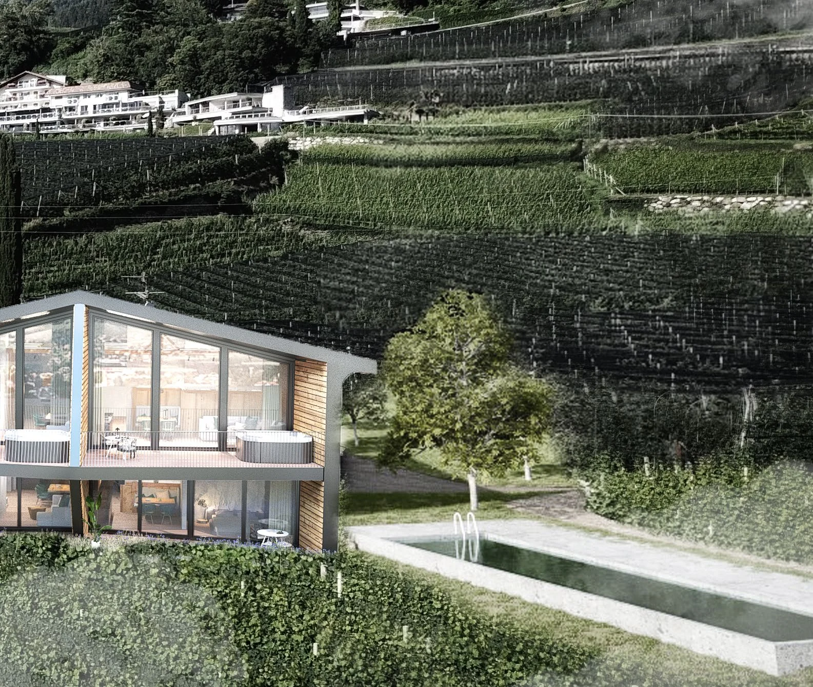

Hillside Residence — Architectural Concept
A residential concept developed in direct response to its landscape. The building frames long views while maintaining a strong relationship with the existing terrain through transparency, timber elements and horizontal volumes.


Next project
View